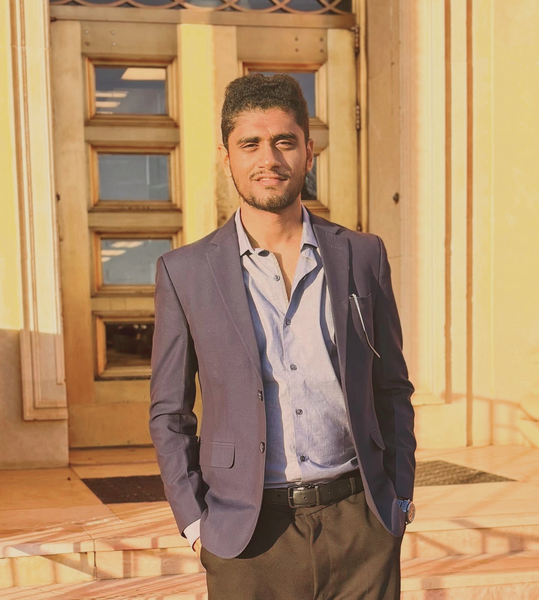

Decisions, engineered.
I find the best way to run an operation: where its sites go, how its fleets and schedules work, how scarce capacity is shared. Then I turn the model into a plan leaders approve.

My first client was a government.
At EY, I worked inside a state agriculture department, on a program backed by the World Bank. I sat in their office, reported to their project director, and learned what a client really needs: a recommendation clear enough to defend to everyone above them.
That became my standard.
To build the depth behind it, I went to Oklahoma State University to study the mathematics of good decisions: optimization, simulation, and data analytics for operational decision-making.
Next, I want to do this work across borders. Walk into an unfamiliar organization, learn how it really runs, and leave it with a decision it can act on.
What you get from me is simple: one clear answer, the reasoning behind it, and an honest account of the risks.
Three decisions on every leader's agenda.
Each one answers a question that a minister, a chief executive or an operations chief is asking right now. The first was for a real government client. The program took my work forward.
Maharashtra's government wanted to implement AI in its agri-tech program funded by the World Bank: a chatbot to advise farmers. Before spending public money, it needed three answers: will it work, how should it be built, and what will it cost?
- The program had built up expert knowledge on crops, farming practices, pests and diseases, but farmers had no easy way to reach it
- The plan: a generative-AI chatbot that answers farmers' questions from that knowledge
- I worked on it from January to June 2024, inside the program's Mumbai office, as part of the EY team
- Client
- Government of Maharashtra, Department of Agriculture
- Program
- Project on Climate Resilient Agriculture: a $600 million state program, funded with the World Bank, helping small farmers in drought-hit districts
- My role
- Technology Consultant Intern, EY · on site, reporting to the Project Director (IAS)
- Timeline
- January to June 2024
- Outcome
- Set the direction for the farmer chatbot. The program took forward the RAG design and cost model, and has built further versions on that foundation since
- Will it work?
- Built the first prototype: a web app on Microsoft Azure, with support from Microsoft's developers
- Tested it and found why it would fail at scale:
- Its search matched keywords, so it missed the context of a real farmer's question
- It stood alone and couldn't plug into the program's existing app
- The Azure deployment kept failing with server errors
- How should it be built?
- Initiated a collaboration with a Microsoft technology partner to build it with us
- Moved to retrieval-augmented generation (RAG): find the right passages in the program's own knowledge, then write the answer from them
- Designed to follow context, handle open-ended questions and tailor answers to a farmer's crop and location
- What will it cost?
- Modeled a month of real use: 10,000 farmers, five questions a day, about 22 words in and 30 words out
- Priced every part: server, database, storage, the RAG service and the AI model
- Total: ₹1.47 lakh a month, about US$1,800
- About ₹15 per farmer a month, of which the AI model is about ₹5
Circular supply chain
Can our returns become revenue instead of waste?
- Asked by
- Finance chief · Sustainability chief
- The work
- A refurbishment network for 28,000 returned phones a year
Service resilience
Can we keep our delivery promise when demand more than doubles?
- Asked by
- Operations chief · Customer officer
- The work
- Peak-day routing and dispatch for a city fulfillment center
Oklahoma's hidden AI Datacenter water bill
Where should Oklahoma's data-center boom go, if water counts as much as the grid?
Gigawatts of data centers are heading to Oklahoma, and no state water permit counts them. Google's Stillwater campus was estimated at about 8.1 million gallons a day at full build-out; the whole city averages about 7 million. I'm mapping every viable grid site, counting both on-site and power-plant water by watershed, and letting an optimizer price the trade-off between grid cost and water stress.
- Built with
- ArcGIS Pro · Gurobi · public state and federal data
- Next
- Presenting at OSU GIS Day, October 20, 2026. Results land here after.
Let's talk about your hardest operations problem.
I'm looking for client-facing roles in consulting, supply chain and optimization from June 2027. If you're hiring, or simply curious, I'd value fifteen minutes.